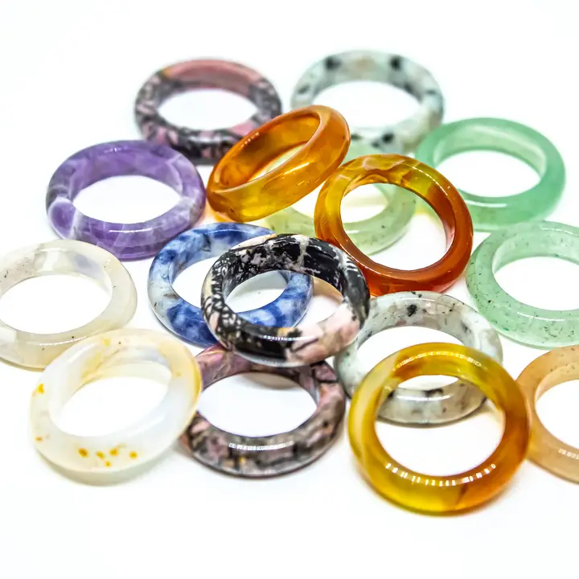

₮20,000
Байгалийн цэвэр чулуу
Ягаан болор: Нөхцөлгүй хайр, энэрэнгүй сэтгэлийг эрхшээгч зөөлөн энергитэй чулуу. Зүрхэн хүрдэд шууд хүрж үйлчилдэг тул эзэндээ романтик байдал,
хайр дүүрэн харилцаануудыг дуудаж өгнө. Ширүүн ааштай, амархан ууралж уцаарладаг, бусдад итгэж чаддаггүй хүмүүст онцгой ээлтэй.
Барын нүд: Хүний эд баялаг, урам зориг, гал эрч хүчийг эрхшээгч наран сүлжээ хүрдэд хүрч үйлчилдэг энэхүү чулуу нь эзэндээ эр зориг, цуцашгүй эрч хүчийг дууддаг.
Нарны алтан шар өнгө нь амьдралд аз жаргал, урам зоригийг дууддаг бол,
хар өнгө нь аливаа сөрөг энергиэс давхар хамгаалж өгнө. Урам зориг мохсон, гал цоггүй, ажил бүтэл муутай байгаа хүмүүст онцгой ээлтэй.
Муурын нүд: Чулууны ер бусын чадвар гэвээс эзэмшигчийнхээ зөн совинг нь хурцалж, харааны авьяасыг нээдэг.
Саран чулуу: Тэрээр үзэсгэлэн гоо, энэрэнгүй хайрыг мөн бэлгэддэг тул эмэгтэй хүнд заавал байх ёстой чулуунуудын нэг гэж үздэг ажээ. Хүссэн бүхнээ өөртөө татах соронз мэт увдис,
эмэгтэйлэг энергиэ татах хүсэлтэй, мөн эрэгтэйлэг энерги хэт давамгай хөгжсөн, түрэмгий занг багасгах зорилготой хүн бүрт онцгой ээлтэй.
Замагт мана: Эд баялгийг өөртөө татах, өөрийгөө үнэлэх чадварыг дээшлүүлдэг гэж үздэг. Энэхүү чулуу нь эв нэгдэл, нөхөрлөлийн чулуу гэж тооцогддог
бөгөөд анхаарал төвлөрөл, тууштай байдал, тэсвэр тэвчээр, хичээл зүтгэлийг дэмжин амжилт гаргахад тусалдаг гэж үздэг.
Нил ягаан болор: Эрт дээр үед аметист буюу нил ягаан болор чулуу нь алмаз эрдэнээс ч илүү үнэ цэнтэй,
зөвхөн хаад ноёдын хэрэглэдэг чулуу байв. Титэм хүрдэд хүрч үйлчилдэг энэхүү чулуу нь айдас түгшүүрийг дарж,
зөн совинтойгоо холбогдоход тусална. Мөн давхар энергийн хамгаалалтыг бэхжүүлж өгдөг.
Улаан мана: Энэхүү чулуу нь бие махбодийн эрүүл мэндийг сайжруулж, сэтгэл санааг өөдрөг болгодог.
Мөн стресс тайлах, сэтгэл гутралын шинж тэмдгийг бууруулахад тусалдаг гэж үздэг. Улаан мана нь мөн
биеийн эрч хүчийг нэмэгдүүлж, дархлааг сайжруулдаг гэж итгэдэг.